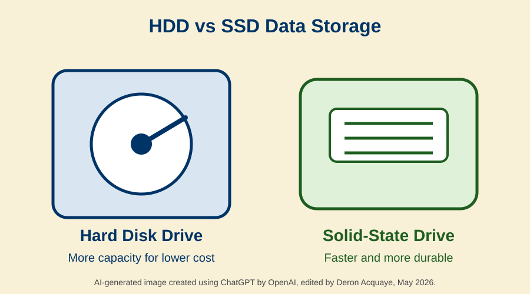

Data storage is important for computers because it allows systems to store, access, and use information. This applies to laptops, personal computers, and large servers. The type of storage device used can affect how fast, reliable, and efficient a computer system is. Two common storage devices used today are Hard Disk Drives, also known as HDDs, and Solid-State Drives, also known as SSDs.
Hard Disk Drives use moving parts such as spinning disks and mechanical arms to read and write data. This technology has been used for many years, but the moving parts can wear out or become damaged over time. Solid-State Drives use flash memory and do not have moving parts, which makes them faster and more durable. Because of this, SSDs are becoming more common in modern computers, especially when speed is important (Mearian, 2024).
This project compares Hard Disk Drives and Solid-State Drives. It explains their benefits, legal and ethical issues, security concerns, social concerns, and future impact on computing technology.

AI-generated image created using ChatGPT by OpenAI, May 2026. The image represents the comparison between HDD and SSD storage devices.